Dive Timeline
Where The Journey Takes Us
Tiga rangkaian utama yang membawa perayaan Dies Natalis HIMTIKA IX.
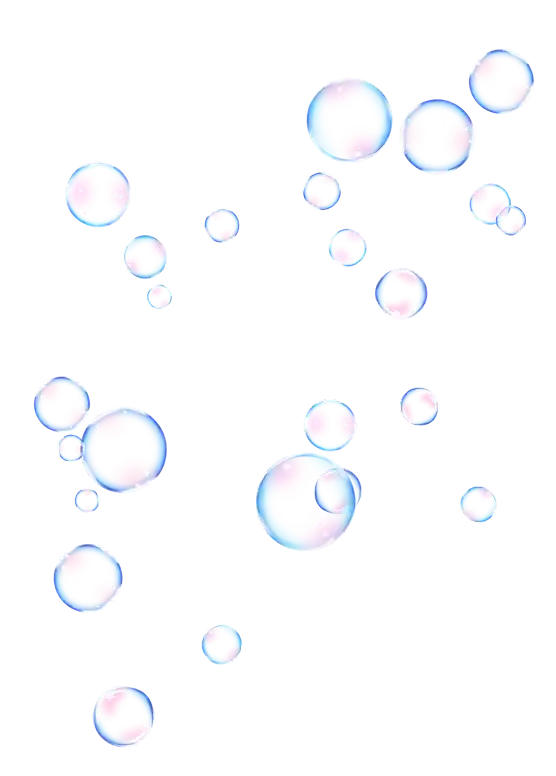
Informatics Growing Stronger: Harmony, Celebration, and Solidarity for the Future.
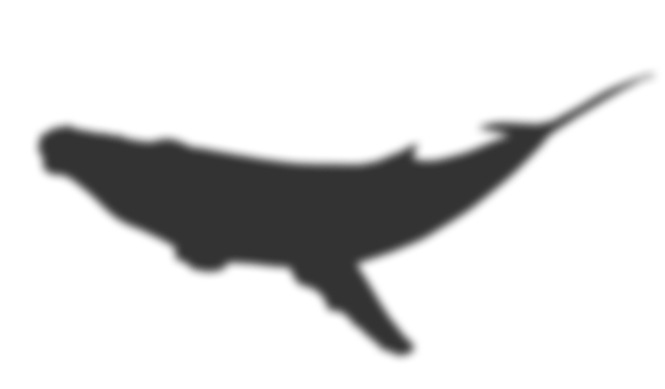
Dies Natalis merupakan rangkaian acara dalam memperingati berdirinya organisasi HIMTIKA, sekaligus mempererat tali silaturahmi antar pengurus dan anggota HIMTIKA.
One Journey. One Celebration. One HIMTIKA.
Beyond Celebration, We Dive Deeper To Connect, Grow, And Strengthen The HIMTIKA Family.
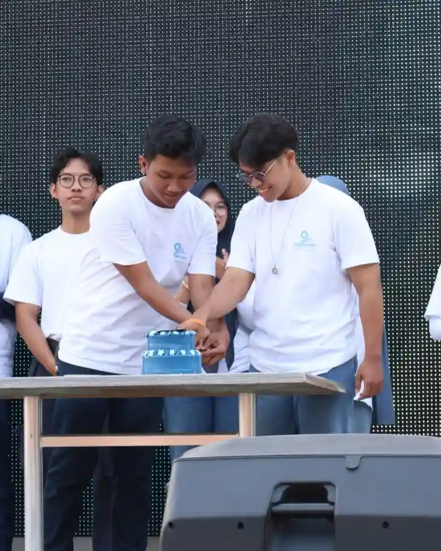
Memperingati Hari Kelahiran HIMTIKA.
01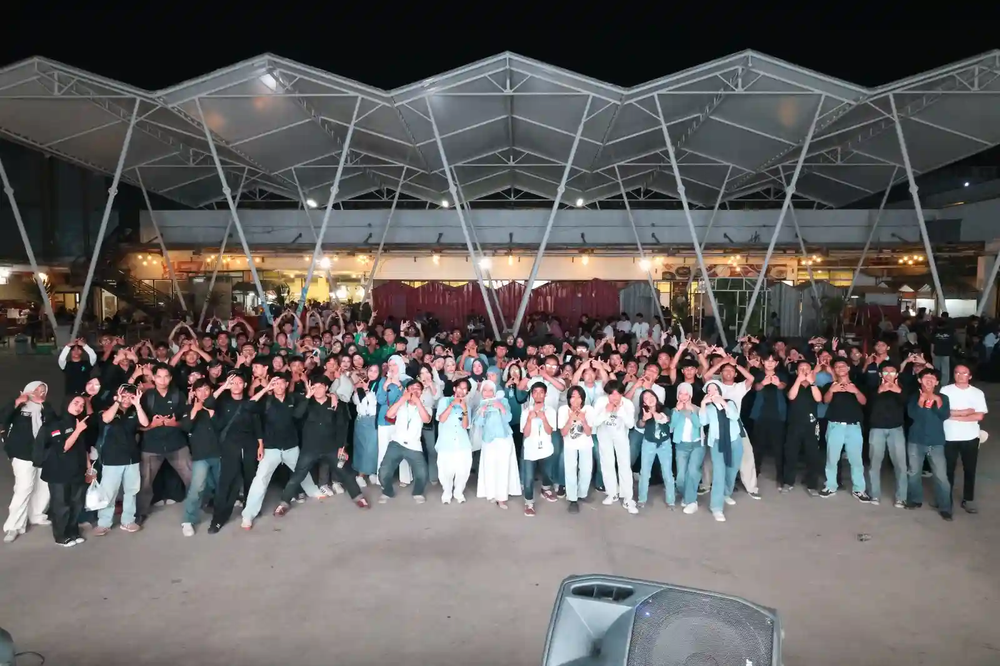
Mempererat Silaturahmi Antar Mahasiswa.
02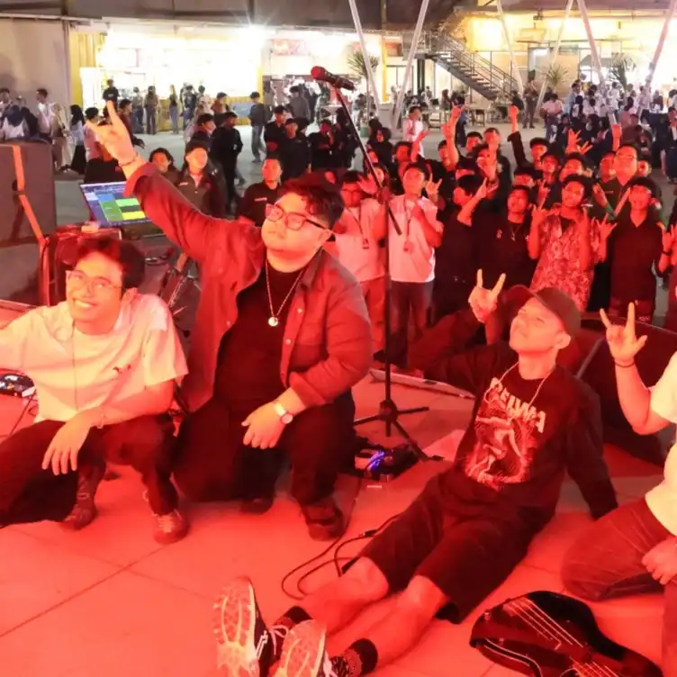
Menjaga Solidaritas Keluarga Besar HIMTIKA.
03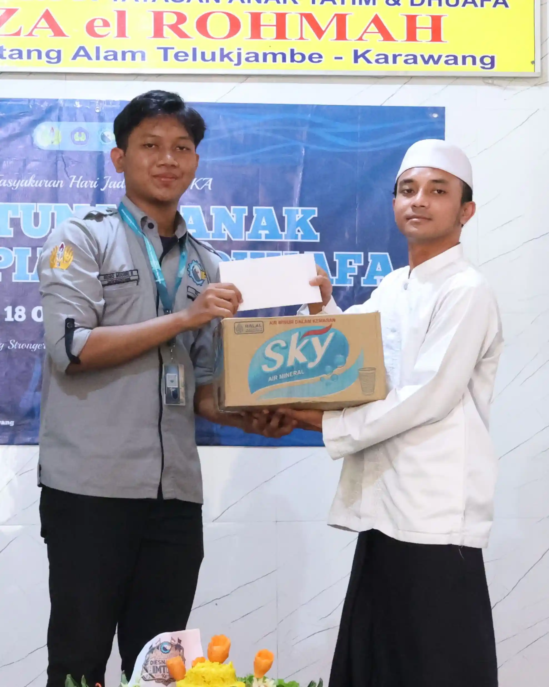
Menciptakan Suasana Harmonis Yang Inspiratif.
04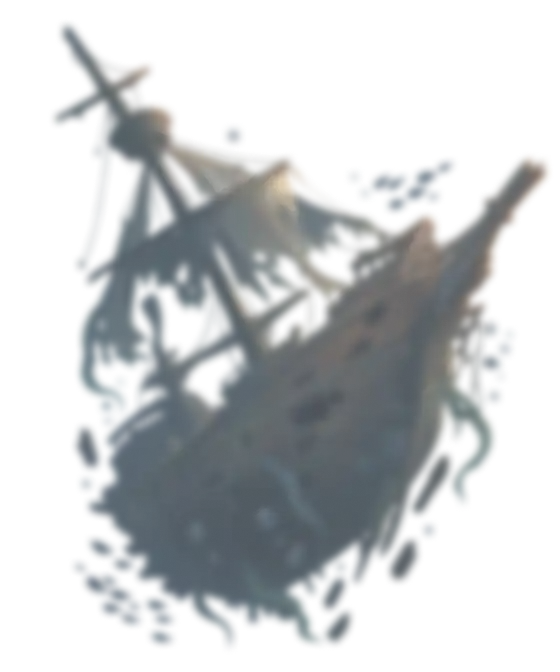
Dive Timeline
Tiga rangkaian utama yang membawa perayaan Dies Natalis HIMTIKA IX.
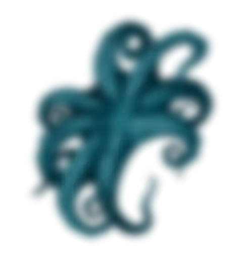
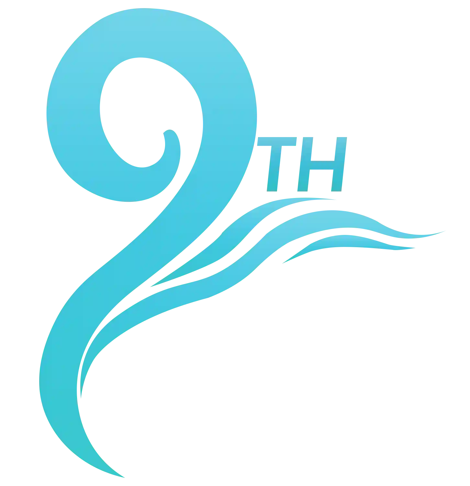
The Symbol
Di balik setiap bentuk dan warna, terdapat cerita yang merepresentasikan semangat dan perjalanan Dies Natalis HIMTIKA IX.
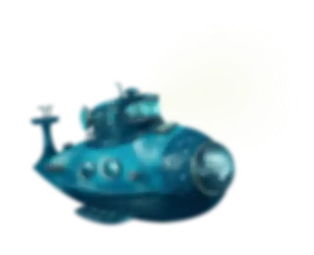
Meet The Abyssal Jelly
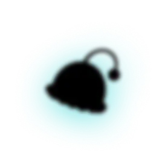
Something Is Glowing Beneath The Surface.
A collection of moments, memories, and stories from Dies Natalis HIMTIKA IX.